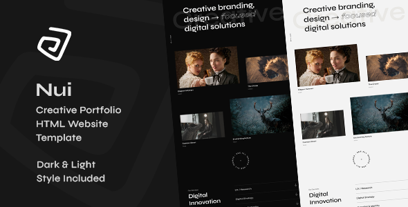
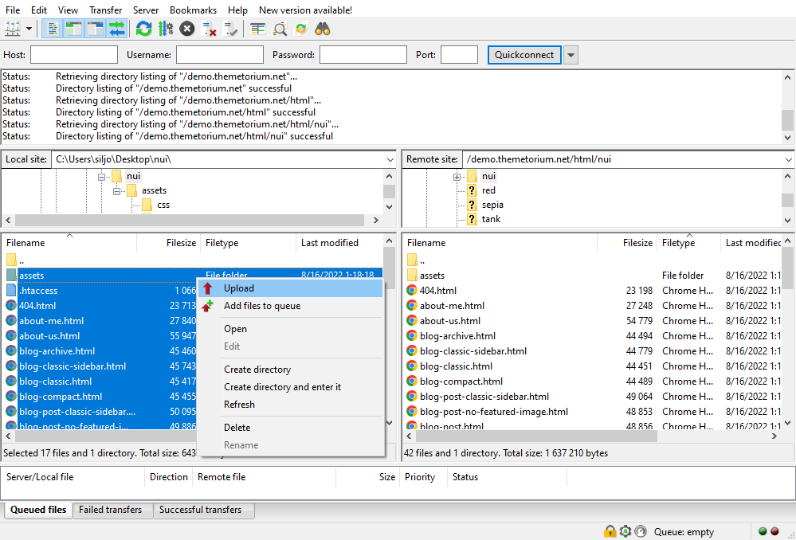

Thank you for purchasing this template. :)

This template requires that you are familiar with at least HTML and CSS. If you are not familiar with HTML and CSS, I highly recommend that you hire a specialist. It will save your time and you will get only positive emotions while using this product.
Nui - is a simple HTML template. HTML is static, this means no dynamic features (no PHP and MySQL). This template is just a good starting point if you want to create your own web site contains mainly the design elements you can use.
* Some parts may not work properly on your local computer. Upload template to your web server to function properly!
All template files are located in folder named "UPLOAD".
+-- nui/ +-- assets / ¦ +-- css / ¦ ¦ +-- helper.css (helper CSS classes) ¦ ¦ +-- light-style.css (template light style CSS) ¦ ¦ +-- theme.css (template master CSS) ¦ +-- img / ¦ ¦ +-- ...all images used ¦ +-- js / ¦ ¦ +-- theme.js (template JS) ¦ +-- vendor / ¦ ¦ +-- ...all external scripts/plugins ¦ +-- vids / ¦ ¦ +-- ...all video files used ¦ +-- favicon.ico +-- mail.php +-- index.html +-- about-me.html +-- about-us.html +-- ...all .html files
Simply upload all template files (can be found in "UPLOAD" folder) to your server using your favorite FTP client (I recommend FileZilla). Once uploaded, point your browser to your site URL and you are done. No any hocus-pocus. :)
This template uses its own grid system with similar logic to the Bootstrap grid system.
<div class="tt-section"> <div class="tt-section-inner tt-wrap"> <div class="tt-row"> <div class="tt-col-md-8">...</div> <div class="tt-col-md-4">...</div> </div> <div class="tt-row"> <div class="tt-col-md-4">...</div> <div class="tt-col-md-4">...</div> <div class="tt-col-md-4">...</div> </div> <div class="tt-row"> <div class="tt-col-md-6">...</div> <div class="tt-col-md-6">...</div> </div> </div> <!-- /.tt-section-inner --> </div> <!-- End tt-section -->
jQuery - is a fast, small, and feature-rich JavaScript library. It makes things like HTML document traversal and manipulation, event handling, animation, and Ajax much simpler with an easy-to-use API that works across a multitude of browsers. With a combination of versatility and extensibility, jQuery has changed the way that millions of people write JavaScript. For more information: http://www.jquery.com
Note: The initialization of the elements, libs and features is made by the file named "theme.js" which is located in the folder named "js".
This template contains some extra prepared helper classes you can use. All helper classes are located in the file "helper.css". You are free to use these classes to customize your website.
This template comes with a style switch so you can easily switch between dark and light styles (the default style is dark).
1) In <head> section on your template HTML files find this line:
<link id="tt-themecss" rel="stylesheet" href="assets/css/theme.css">
2) Below it add:
<!-- Template light style CSS (default) --> <link id="tt-light-style-default" rel="stylesheet" href="assets/css/light-style.css">
3) You may need to delete your browser's cookies and cache.
1) In <head> section on your template HTML files find this line:
<link id="tt-themecss" rel="stylesheet" href="assets/css/theme.css">
2) Below it add:
<!-- Template light style CSS --> <link rel="stylesheet" href="assets/css/light-style.css">
3) Open file "assets/js/theme.js" and find:
// ========================================================================== // Begin template style switch // NOTE: Remove this code if you do not want to use the template light style. // ==========================================================================
4) Remove all style switch code in this section.
5) You may need to delete your browser's cookies and cache.
1) Open file "assets/js/theme.js" and find:
// ========================================================================== // Begin template style switch // NOTE: Remove this code if you do not want to use the template light style. // ==========================================================================
2) Remove all style switch code in this section.
3) You may need to delete your browser's cookies and cache.
The good practice is that you do not edit directly to the template core CSS files. Instead, create a new CSS file (for example "custom.css") and place it in the folder assets/css/, then make your changes there.
Do not forget to add: <link rel="stylesheet" href="assets/css/custom.css"> to the <head> part of your HTML file. Make sure it is located below line: <link id="tt-themecss" rel="stylesheet" href="assets/css/theme.css">, otherwise it will not work.
<head> part of your HTML file find:
<!-- Template master CSS --> <link rel="stylesheet" href="assets/css/helper.css"> <link id="tt-themecss" rel="stylesheet" href="assets/css/theme.css">Below it add:
<!-- Template custom CSS --> <link rel="stylesheet" href="assets/css/custom.css">
Now file custom.css overwrites the master CSS files, and next time if you update the template, then your CSS changes will not be lost.
All sliders and carousels based on Swiper.js. More information can be found here: https://swiperjs.com
All animations based on GSAP. More information can be found here: https://greensock.com/gsap/
This template includes a working contact form. Proceed as follows in order to configure it.
Open file "contact.html" or whatever file containing the contact form. Find and configure the following code:
<!-- Begin hidden required fields (https://github.com/agragregra/uniMail) --> <input type="hidden" name="project_name" value="yourwebsiteaddress.com"> <!-- Change value to your site name --> <input type="hidden" name="admin_email" value="your@email.com"> <!-- Change value to your valid email address (where a message will be sent) --> <input type="hidden" name="form_subject" value="Message from yourwebsiteaddress.com"> <!-- Change value to your own message subject --> <!-- End Hidden Required Fields -->
More information about uniMail: https://github.com/agragregra/uniMail
Font Awesome - gives you scalable vector icons that can instantly be customized size, color, drop shadow, and anything that can be done with the power of CSS.
<i class="fas fa-search"></i> <i class="far fa-user"></i> <i class="fal fa-folder-open"></i> ...
More information about Font Awesome: https://fontawesome.com/
Google Fonts:
Please take a look in the <head> part of the website and you will find these tags:
<!-- Google fonts (https://www.google.com/fonts) --> <link rel="preconnect" href="https://fonts.googleapis.com"> <link rel="preconnect" href="https://fonts.gstatic.com" crossorigin> <link href="https://fonts.googleapis.com/css2?family=Poppins:wght@300;400;500;600;700;800;900&display=swap" rel="stylesheet"> <!-- Body font --> <link href="https://fonts.googleapis.com/css2?family=Syne:wght@400;500;600;700;800&display=swap" rel="stylesheet"> <!-- Secondary/Alter font -->
To change the font, first go to http://www.google.com/webfonts choose a font/fonts and use the generated code.
The best way to update the template is to use some file comparison software to compare the differences between the old and new template versions
(I recommend “WinMerge”: ). Then make the necessary changes. I know this may be time-consuming, but unfortunately, there is no easier solution.
A super special thanks to those artists and authors who gave their permission to use their amazing works! THANK YOU! :)
If you need help with this template, please send me an email by using the contact form you can find here.